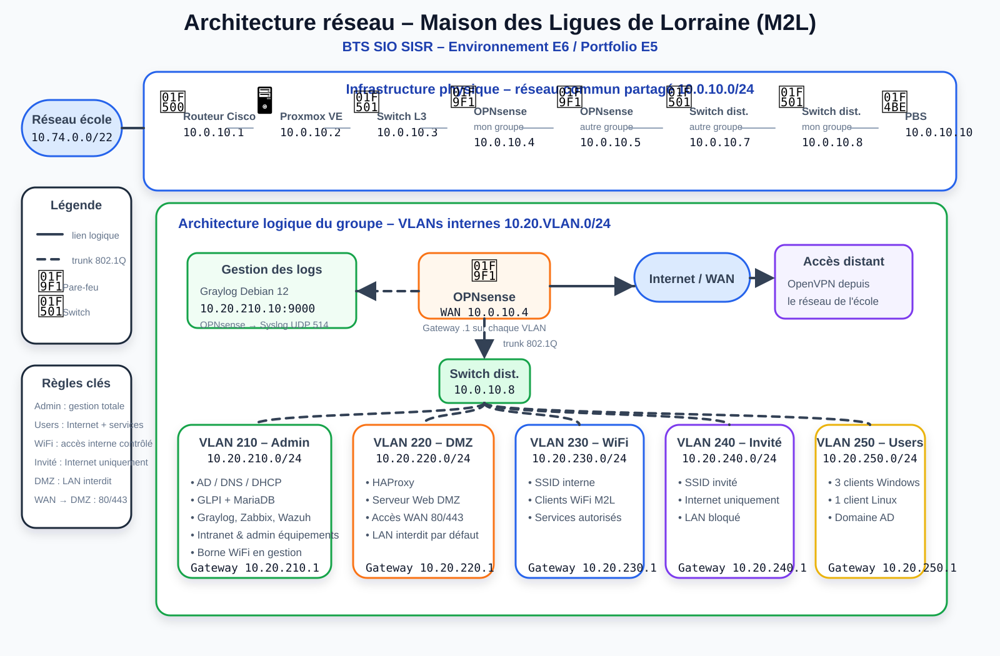

1
Déploiement et configuration d'un pare-feu OPNsense
Segmentation VLAN, NAT, routage inter-VLAN, filtrage, isolation du WiFi invité et protection de la DMZ.
Voir la réalisation 1Cette page présente mon environnement technologique E6 pour la Maison des Ligues de Lorraine (M2L) : une infrastructure segmentée par VLANs, sécurisée par OPNsense et supervisée par Graylog.
L'infrastructure repose sur le réseau de l'école, un réseau commun partagé entre deux groupes, puis une architecture interne propre à mon groupe avec OPNsense comme passerelle et point de filtrage central.
Réseau source : 10.74.0.0/22. Le routeur Cisco permet la segmentation vers le réseau commun du laboratoire.
Réseau partagé : 10.0.10.0/24 avec routeur, Proxmox, switch L3, OPNsense des deux groupes, switchs de distribution et PBS.
OPNsense porte les passerelles VLAN en .1, assure le NAT, le routage inter-VLAN et les règles de sécurité.
Graylog centralise les logs OPNsense via Syslog UDP 514 pour analyser les connexions bloquées et les événements réseau.
Le schéma ci-dessous représente l'architecture physique et logique : réseau école, réseau commun partagé, mon pare-feu OPNsense, mon switch de distribution, les VLANs, la DMZ, le WiFi invité et la supervision Graylog.

| VLAN | Nom | Réseau | Passerelle OPNsense | Rôle |
|---|---|---|---|---|
| 210 | Admin | 10.20.210.0/24 | 10.20.210.1 | Administration, serveurs, équipements, supervision |
| 220 | DMZ | 10.20.220.0/24 | 10.20.220.1 | Services exposés : HAProxy, serveur web DMZ |
| 230 | WiFi | 10.20.230.0/24 | 10.20.230.1 | WiFi interne M2L |
| 240 | WiFi invité | 10.20.240.0/24 | 10.20.240.1 | Invités isolés, accès Internet uniquement |
| 250 | Users | 10.20.250.0/24 | 10.20.250.1 | Postes utilisateurs Windows et Linux |
Les deux réalisations sont complémentaires : la première sécurise et segmente le réseau, la seconde centralise les journaux pour détecter et analyser les incidents.
Segmentation VLAN, NAT, routage inter-VLAN, filtrage, isolation du WiFi invité et protection de la DMZ.
Voir la réalisation 1Déploiement de Graylog sur Debian 12, réception Syslog OPNsense, dashboards sécurité et alertes mail.
Voir la réalisation 2